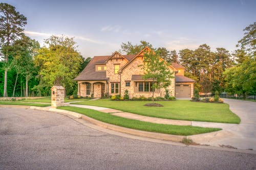
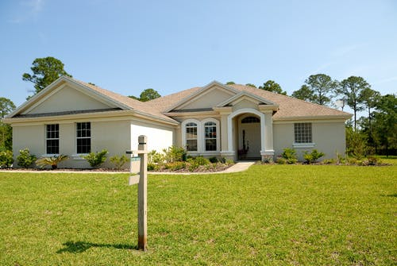

Congress' Nana Patole elected unopposed as Maharashtra Speaker after BJP withdraws
Shiv Sena President Uddhav Thackeray with NCP chief Sharad Pawar and Maharashtra Congress president Balasaheb Thorat. Unlikely alliance. Three-legged stool. Opportunistic. Ragtag. Power-hungry. Short shelf-life. From the polite to the contemptuous, many epithets have been used to describe the Maha Vikas Aghadi, Maharashtra’s newest political formation that took shape over an extraordinary month. The reality is that three parties, one of them with a starkly different ideology to the other two, pulled off what many thought could never happen: buried their differences, put out a common minimum programme and managed to form a government. Even Chief Minister Uddhav Thackeray seemed a little surprised that he and his two new-found allies, Congress and Nationalist Congress Party (NCP), had managed to achieve what they had. “Even today, I feel I have come here to give a memorandum to the CM,” he said on his first day in office. But as the real work of running a government begins, what next?